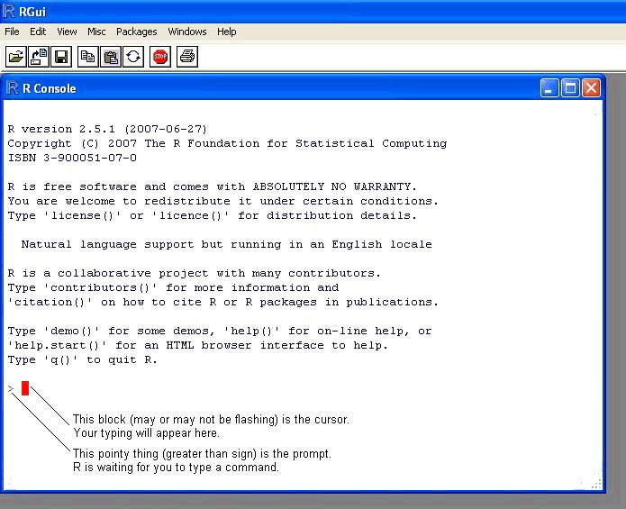

Chapter 4 Getting Started
4.1 Why R?
R is not a programming language like C or Java. It was not created by software engineers for software development. Instead, it was developed by statisticians as an interactive environment for data analysis. You can read the full history here. The interactivity is an indispensable feature in data science because, as you will soon learn, the ability to quickly explore data is a necessity for success in this field. However, like in other programming languages, you can save your work as scripts which can be easily executed at any moment. These scripts serve as a record of the analysis you performed, a key feature that facilitates reproducible work. If you are an expert programmer, you should not expect R to follow the conventions you are used to since you will be disappointed. If you are patient, you will come to appreciate the unequal power of R when it comes to data analysis and data visualization specifically.
Other attractive features of R are the following:
- R is free and open source.
- It runs across all major platforms: Windows, Mac Os, UNIX/Linux.
- Scripts and data objects can be shared seamlessly across platforms.
- There is a large, growing, and active community of R users and, as a result, there are numerous resources for learning and asking questions.
- It easy for others to contribute add-ons which enables developers to share software implementations of new data science methodologies. This gives R users early access to the latest methods and to tools which are developed for a wide variety of disciplines, including ecology, molecular biology, social sciences, and geography, just to name a few examples.
4.2 Installing R
You can download R freely from the Comprehensive R Archive Network (CRAN). It is relatively straightforward, but if you need further help you can try the following resources:
If you want to try out R without installing it, you can access a web based console such as R fiddle.
4.3 The R console
Interactive data analysis usually occurs on the R console that executes commands as you type them. There are several ways to gain access to an R console. One way is to simply start R on your computer. The console looks something like this:

As a quick example, try using the console to calculate a 15% tip on a meal that cost $19.71:
0.15 * 19.71
#> [1] 2.96Note that in this book, grey boxes are used to show R code types into the R console. The symbol #> is used to denote what the R console outputs.
4.4 Scripts
One of the great advantages of R over point-and-click analysis software is that you can save your work as scripts. You can edit and save these scripts using a text editor. We highly recommend working on an interactive integrated development environment (IDE) such as RStudio, which includes an editor with many R specific features, as well as a console to execute your code, and other useful panes including one to show figures.

Note that most web-based R consoles also provide a pane to edit scripts, but not all permit you to save the scripts for later use.
4.5 Installing RStudio
Instructions on how to install RStudio are here and for Windows we have special instructions here.
Once you install RStudio you can simply start RStudio rather than R since that program automatically starts R. But don’t be confused. R is a different piece of software and you can’t run RStudio without first installing R.
If you are going to follow along with RStudio as you read this book, you might consider reading the chapter five sections specifically dedicated to RStudio. RStudio includes many useful features other than providing a script editor and you want to familiarize yourself with these.
And remember the R scripts used to generate this book can be found on GitHub.
4.6 The R ecosystem
The functionality provided by a fresh install of R is only a small fraction of what is possible. In fact, we refer to what you get after your first install as base R. The extra functionality comes from add-ons available from developers. There are currently hundreds of these available from CRAN and many others shared via other repositories such as GitHub. However because not everybody needs all available functionality, we instead make different components available via packages. R makes it very easy to install packages from within R. For example, to install the dslabs package which we use to share dataset and code related to this book you would type:
install.packages("dslabs")In RStudio you can navigate to the Tools tab and select install packages. We can then load the package into our R sessions using the library function:
library(dslabs)As you go through this book you will see that we load packages without installing them. This is because once you install a package, it remains installed and only needs to be loaded with library. The package remains loaded until we quit the R session. If you try to load a package and get an error, it probably means you need to install it first.